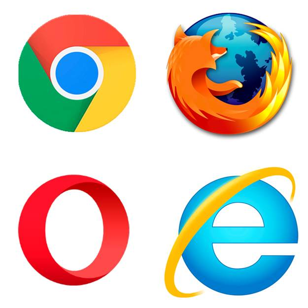

Какой браузер выбрать?

Что это?
Браузер является нашим окном в Интернет. Это то самое приложение, которое мы открываем, чтобы проверить электронную почту, пообщаться с друзьями в соцсетях, найти или купить что-нибудь в Сети. Проблема в том, что существует десятки самых разных интернет-обозревателей.
Какой?
Чтобы понять, какой браузер лучше, необходимо, прежде всего, обозначить критерии выбора. Для одних пользователей важна конфиденциальность, для других – юзабилити, третьим – скорость работы. Выбирать лучший именно для вас браузер нужно под конкретные задачи.
Топ-3 лучших браузеров
-
Google Chrome
Преимущества
- быстрый запуск и загрузка сайтов;
- регулярное обновление и совершенствование;
- самостоятельное обновление браузера в процессе работы;
- безопасность персональных данных;
- открытый исходный код Chromium.
Недостатки
- значительное потребление оперативной памяти в процессе работы браузера, из-за чего для просмотра большого числа вкладок рекомендуется иметь ОЗУ больше 2 Гб;
- довольно быстрый расход заряда аккумулятора у ноутбуков и мобильных устройств;
- отсутствие перевода на русский язык у ряда расширений;
- отсутствие встроенного ассистента.
-
Яндекс Браузер
Преимущества
- первое место по скорости загрузки веб-страниц;
- наличие специальных возможностей, таких как «умная строка», значительно упрощающих процесс интернет-серфинга;
- распознавание жестов мыши для быстрого осуществления действий с вкладками и применения инструментов;
- встроенный голосовой помощник Алиса;
- поддержка расширений Google и Opera.
Недостатки
- высокая нагрузка на оперативную память и процессор;
- активное продвижение сервисов Яндекса, браузер предлагает установить ряд приложений на устройство пользователя;
- глубокая интеграция со службами Яндекса, при их недоступности функциональность браузера заметно ухудшается;
- возможность ошибок в процессе экспорта данных.
-
Mozilla Firefox
Преимущества
- множество настроек для персонализации, т.е. изменения внешнего вида браузера по своему желанию, причем как в десктопной, так и в мобильной версии;
- редактируемая панель визуальных закладок;
- средство просмотра pdf-файлов;
- инструменты для веб-разработки;
- собственный магазин расширений.
Недостатки
- не самый привлекательный интерфейс из-за большого числа настроек;
- необходимость в ходе знакомства с браузером изучить особенности настройки расширений;
- медленная реакция на действия пользователя по сравнению с другими известными браузерами, основанными на движке WebKit;
- средняя производительность, на которую влияет число установленных расширений.
[ Домой ]